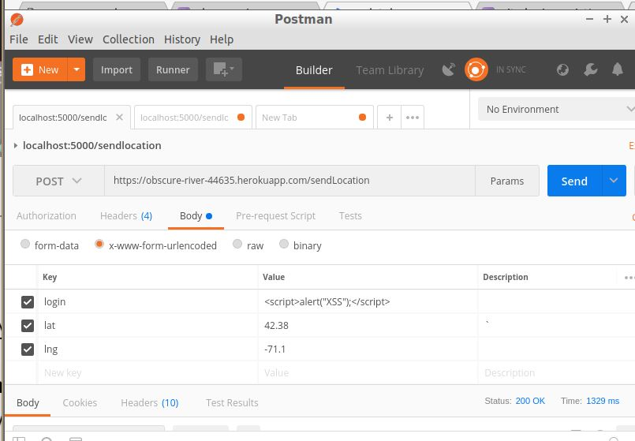
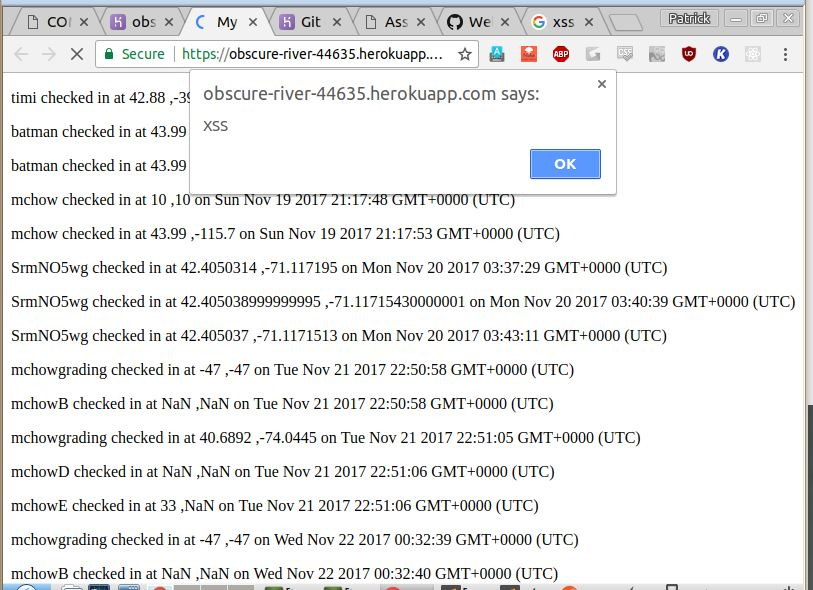
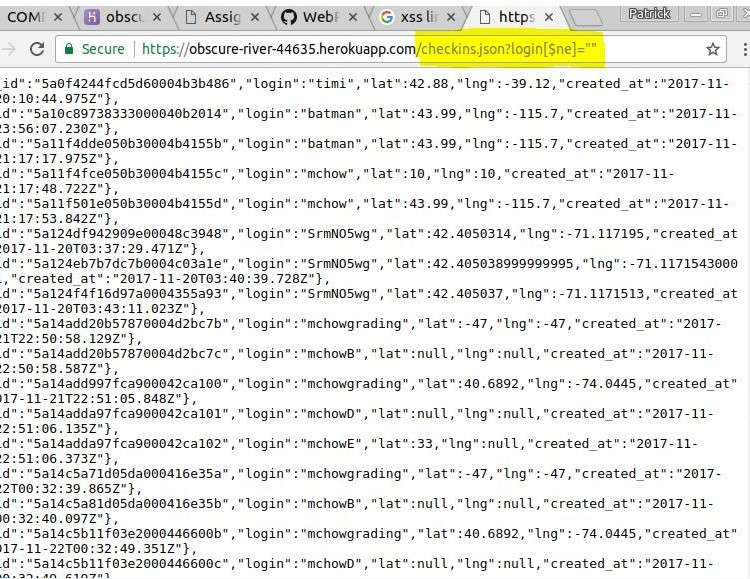
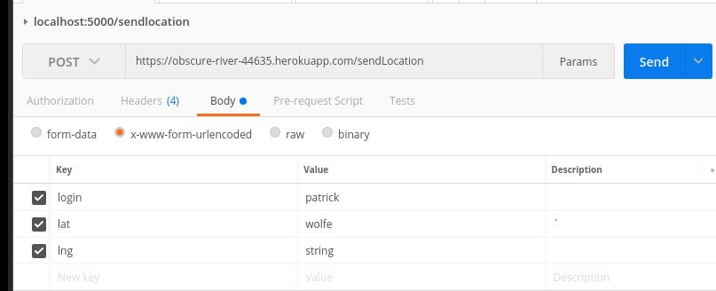
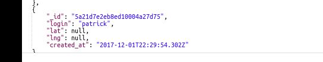

The product is a geolocation based app that can take a user's location and return landmarks nearby to that user as well as other users that have logged into the app and their locations. I have been hired to examine the app for any potential security vulnerabilities.
First I attempted to look for any vulnerabilites using black box testing. This meant accessing the app without looking at the actual source code. I used the Postman application to send POST requests and for GET requests simply used the address bar in my browser. After that I looked at the source code for the application by cloning the heroku app using git which allowed me to take a closer look at how the app works in order to pinpoint possible sources of vulnerabilities.
Three security issues I found were cross site scripting, Mongo injections, and the ability to input non numeric values as lat and lng. Cross site scripting allows users to inject malicious JavaScript into the database which then will activate when the logins are displayed. This is bad because it allows people who are not developers to change our app in unexpected ways. MongoDB injections allow users to submit queries for accounts they should not have access to. This is an issue because it can allow a malicious user to access sensitive information about other users' or admins' accounts.
Severity: high - can completely destroy functionality for '/' GET request that displays checkins and anything else that displays the information returned in JSON form in an HTML page.
This issue happens when a user inputs JavaScript as their login in the POST request. When the logins from the database are displayed in HTML, the JavaScript runs which can allow the page to be manipulated in a variety of malicious ways, including displaying outside images or even redirecting to a completely different page.
Proof: Here's an example of a POST request containing JavaScript:

And here's what happens when we try
to access the page with all the checkins:

The alert occurs because the JavaScript has been run
Resolution: HTML encoding (on the server side) the login string will prevent the user from inserting JavaScript into the database, which will then cause issues when the logins are displayed in HTML. This can be done by writing a basic JavaScript function that takes a string as a parameter and returns the same string except with '<' and '>' encoded to '& lt;' and '& gt;' respectively (with no space following the &). This will cause logins with those characters to appear the same to the user, but HTML will not look at them as tags so <script> cannot be inserted into the page.
Severity: medium - this will not destroy functionality for any aspect of the app but it is a serious privacy concern as a user can view all the information for users in the database without knowning their logins.
Proof:This is the result of inputting login[$ne]='' as the query for the '/checkins.json' GET request

The information for all users in the database is displayed by querying for logins not equal to a null string
Resolution: This can be done by sanitizing user input on the server side. The reason for doing it on the server side is that if it is done on the client side, a web proxy could be used to intercept the request and alter the query. Sanitizing user input means removing any keys that start with '$'. This will prevent malicious queries that could lead to users accessing information they should not have access to. This should be done in the 'checkins.json' GET request by checking the login in the request and making sure it does not have a leading '$'.
Severity: low - this also will not break the app but it can cause issues with compatibility if it is assumed that the lat and lng values for users that have successfully checked in are valid lat/lng values
Proof:This an example of a POST request with non numerical values for lat and lng

This is the result

Since "patrick" is not a number, toFloat() returned NaN and that was set as the value for lat.
Resolution: The fix for this is very simple. We can just check if lat or lng is equal to NaN with a basic conditional and return an error to the user if one is NaN, making sure not to insert the problematic document into the users collection in our MongoDB.
These vulnerabilities can be removed using good security practices and will not cost very much to solve. However, it's likely that new vulnerabilities will be discovered in the app so we need to be proactive in looking for them and solving them before they cause major problems for our users. My reccommendation would be to hire at least one employee for a cyber security based position. The median salary of an Information Secutiry analysis is $90,000 USD so a reasonable expectation for the future cost is about that much.
XSS: https://www.owasp.org/index.php/Cross-site_Scripting_(XSS)
Mongo injection: https://www.owasp.org/index.php/Testing_for_NoSQL_injection
Preventing Malicious Queries: https://zanon.io/posts/nosql-injection-in-mongodb